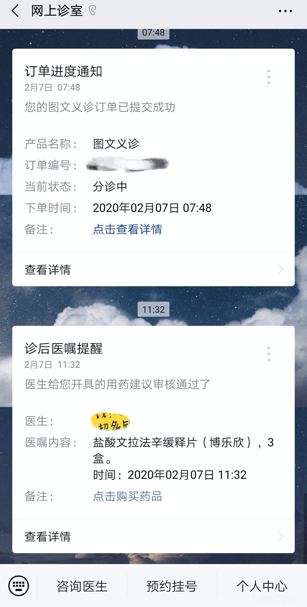
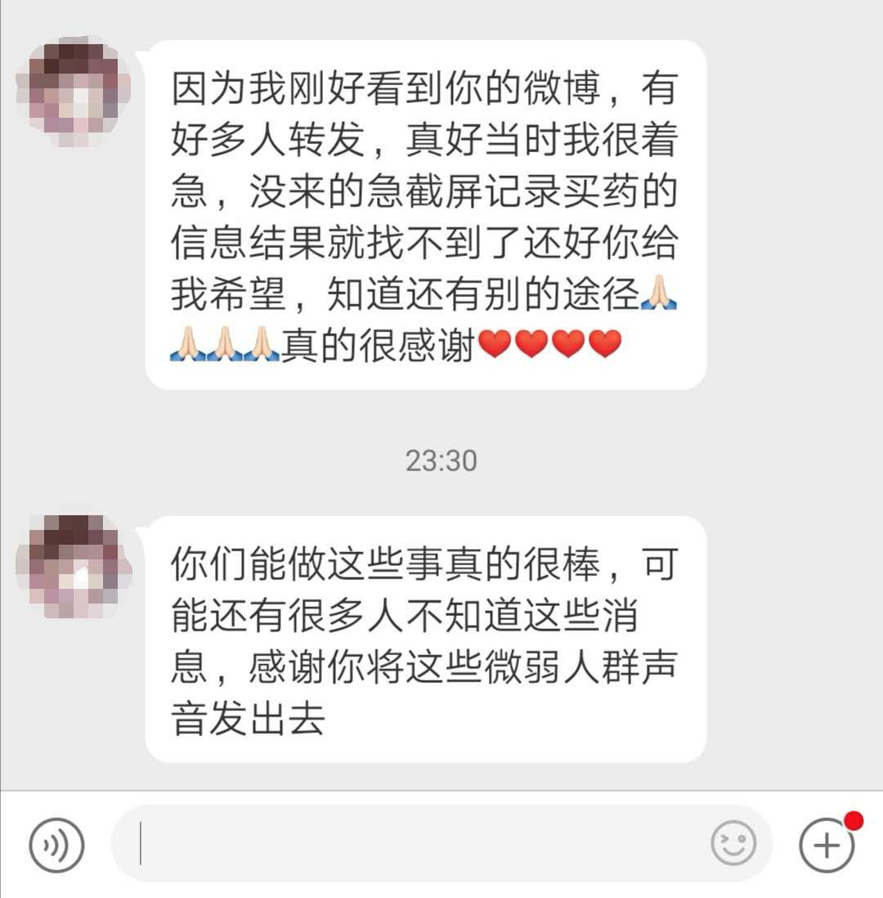

防医院内感染，是一场“苦战”——专访华山医院“医院感染管理科”主任杨帆教授
原文链接 备份链接 有时候半夜突然想到某个可能的漏洞，惊出一身冷汗。 记者 | 黄 祺 抗击新冠肺炎疫情的紧要关头，医院不能失守。 中国疾控中心2月17日的一份研究报告显示，全国已有3019名医务人员感染了新型冠状病毒，其中包括1716 …
“要是我能得肺炎就好了。”疫情围困，会让重度抑郁症患者产生一些可怕念头。断药威胁下，他们展开自救，并积极行动起来去援助处境更加凶险的病友。在“想死”和“好好活”之间，这些破碎的人一次次重建内心。
故事时间：2020年
故事地点：福建、湖北、北京
 断药
断药
21点26分，大二学生轰仔挣扎着从噩梦中醒来，昏睡了一整天的她正准备吃今天的第一餐饭。这不是她第一次作息颠倒，整个寒假，她一直活在夜里。
2019年12月，19岁的轰仔去精神科复诊，确诊为重度抑郁，开始按照医嘱每日服一次药。在精神类药物的副作用下，她产生了嗜睡、恶心、四肢乏力等明显的躯体化症状。
“感觉要死了，我准备先写个遗书。”这样的念头一直在轰仔脑子里打转。
服药的副作用是难耐的，但轰仔说，更痛苦的是没有药吃：“药，就是命。”
曾有一次外出，轰仔躺在酒店的床上焦灼不安，想起似乎忘了带药。她不知所措，一遍又一遍地爬起来翻找药物，但却一无所获，只能躺回床上。头晕、头疼、耳鸣、眼球刺痛，戒断反应折磨得她一夜未眠。正事办不成了，她第二日匆匆回程。
从那以后，轰仔再也不敢擅自停药，去哪里都随身带药。若是要出远门，她会在行李箱里备上一份病例和处方单，这样即使药吃完了，也方便在当地就诊开药。吞下那粒小药丸带来的心理安慰，能让她安心片刻。
今年春节回福建老家，轰仔随身带了28片盐酸文拉法辛缓释片，一天一片，足够春节期间在家服用。原本以为家乡受疫情影响不大，如果药吃完了，就在当地医院开药。结果1月30日，轰仔所在的小区开始实行封闭管理。轰仔后知后觉，2月7日发现余下的药只够吃五天了。她立马想起了戒断反应下脆弱又痛苦的自己，陷入了焦虑。
不惜一切代价也要买到药。一秒也不敢耽误。轰仔先是查询本地的精神卫生中心公众号，却发现精神科门诊在未来几周内都没有排班。这时，夹在病历和一沓处方单中间的卡片掉在地上，轰仔捡起来发现是复诊医师的名片。扫描上面的二维码后，她进入到一家网上诊室的公众号。

受访者供图 | 轰仔在网上诊室购药
从医生线上义诊到审核处方单，轰仔等了4个小时。之后，轰仔又等了5天快递。直到家里只剩下一片药，轰仔恨不得把它掰成两片来吃时，送药的快递终于到了。
疫情下，封城封村，断药成了这群抑郁症患者共同面临的现实危机。
特殊时期，医生宽限了药量，给轰仔开了42天的剂量。轰仔拿到药后长舒一口气 ，把快递盒紧紧攥住。精神类处方药有很强的副作用，一次最多只能开两周的量，并且只有在精神卫生中心或三甲医院的精神科室才能开具。
2017年，WHO发布精神疾病报告，中国的抑郁症发病率达到了4.2%。最新数据显示，中国抑郁症患者数量已达到了9000万。然而，像轰仔这样依靠自己的力量获得药的人只是少数。
“我都停药两天了，抑郁从轻到重。”
“我不敢去医院开药，体质太差了。”
在病友群里，还有人认真地问：“要是村里的人知道我在找抑郁症的药，以后我嫁不出去了怎么办？”病耻感加大了药物的获取难度，还容易让药贩子钻空子。
常有药贩子在贴吧或群里伪装成病友：“我的药吃不完，还有40g便宜出。”患者很难辨别，这40g是面粉还是过期药。错过了正规就诊治疗，擅自使用替代药物，还会有加重病情。

拿到“救命药”后，轰仔没能如预期那样靠着药物稳定好情绪。疫情日益严重，她捧着手机不断刷新消息，可坏消息实在太多了，一向关注时事的她哭着痛骂出声。
尽管情绪状况不乐观，但轰仔坚持浏览这些信息：“不在乎一点也不酷，在乎才是真正需要勇气的事情。”
这是电影《超脱》中的台词，轰仔很喜欢。“想要活下去对我们这样的患者来说是很了不起的事”，轰仔说。疫情期间，她看到一些艾滋病患者在网上求药，伴随而来的是质疑、误解、辱骂，轰仔感到无力。或许因为同病相怜，她对这些自救很有感触：“多一点人想活下去对我们来说就多一点希望”，轰仔心里有了一个小小的愿望——帮助像她一样被困在家里，面临断药风险的病友活下去。
救助行动开始于在2月8日凌晨4点23分，一个轰仔失眠的夜晚，她重新注册了一个微博账号，分享她在疫情期间网上购买抑郁症药物的经验。第二天，热心网友发来自己整理的网上购药途径，轰仔核实后再次发博。她和朋友一起拜托微博大V帮忙转发扩散，这篇微博逐渐积累起了热度和关注。
轰仔一连回复了几百条评论，直至手臂乏力才肯停下。一遍又一遍，她不厌其烦地为病友们讲解网上购药的途径和平台操作方法。受到轰仔的影响，一些能够外出购药或因病情好转留有余药的病友，愿意自负邮费、免费赠药，和缺药的疫区病友一起共度难关。

受访者供图 | 病友从轰仔微博里知晓购药途径
意外来得很快。两天后，轰仔的微博遭人恶意举报封号，她和病友们沟通的渠道突然断了。连日来的压力和此刻的委屈让轰仔喘不过气来，她将手机重重地反盖在桌面上，放声大哭。
哭过之后，她想起了一名在武汉做志愿者的病友。他们共同组建了一个疫区精神类疾病互助微信群，专门帮助网络医疗平台无法配送的湖北地区病友。
对一位湖北黄冈的病友来说，幸运来得比想象中快。2月11日，他通过微博留言和私信联系上轰仔，进入了互助群。黄冈是疫情重灾区，由于小区全面封锁，网络购药不配送，几位黄冈的病友面临着相同的断药困境。“我在重庆，我可以帮你买药。”2月16日下午，群里一位曾罹患抑郁症的群友主动提出，帮黄冈的病友异地购药并邮寄。她表示家附近有很多家医院的药店，只需提供医生的处方单，便可以买到所需的药品。
互助群里有五十余人，一部分病友通过这样的方式拿到了急需的药物，还有一些同城匀药的病友，借助外卖跑腿解了燃眉之急。截至目前，已有近百人向轰仔求助，她每天都关注着大家的需求，确认药物是否送达。为了保护病友隐私，她尽量少问话，积极提供各种求助途径。
不过，还是有很多病友不能拿到药，这让轰仔很失落。有一些病友在乡下隔离，快递和外卖都进不去，轰仔只能看着他们绝望的求助干着急。还有一些药物受到国家管制，线上不予售出，需要本人到医院亲自取药。
尽管已经拼尽全力，轰仔觉得自己的力量还是太有限了：“我也是这场疫情的受害者之一，我也只是个莫名其妙背负起社会责任的普通人。”
好在这场援助行动中，还有其他人在关注着抑郁症患者。在一个疫区互助群里，轰仔看到一位病友分享了自己的经历：“我的医生主动来问是不是缺药，已经安排助理给我们寄药了。”
 *求生*
*求生*
隐藏在断药危机背后的，是不受控制冒出的自残、自杀念头。整个抑郁症患者群体，在关于疫情的信息环境影响下，一次次地重建内心。
一条医护人员被感染的新闻，就会让抑郁症患者产生了强烈的“幸存者内疚”心理。“如果我能得肺炎就好了。”病友群里有人发言，引来了一些附和。
对于健康的人来说，面对疫情的第一反应是保护好自己和家人。但抑郁症患者本就消极厌世，有的人会冒出这样念头：死于肺炎或许能想到的最“得体”的死亡方式，可以避免与自杀有关的社会舆论压力。
即使不在眼下的特殊状况中，每年春节，当抑郁症患者回到原生家庭，与父母、长辈的接触，也会产生巨大的情绪波动。
湖北女孩颜雨是一名大三学生，已经计划过几次死亡。她患有重度抑郁，回家过年对她来说本是一件别扭的事。颜雨的家是重组家庭，母亲和继父对她很关心，但到底还是有隔阂。还要走亲戚，这更加让颜雨感到痛苦。
平日里，抑郁症患者习惯于求助一、二线城市的精神医疗体系，返乡后，许多小乡镇的心理咨询服务尚未普及，干预不及时会致使病情加重。今年，被封闭在家中的日期无限延长，各种负面情绪以无法预知的方式点燃，朝他们涌去。
1月中旬回家后，颜雨发现身为医生的继父每天加班。临近除夕，武汉封城，疫情加重，继父连回家的时间都没有了。家里只剩下她和母亲，一切又失去了平衡。2月5日，母亲无意识地对颜雨说：“都这么久了，你怎么还没好呢？” 一直以来，母亲很理解颜雨的抑郁症，处处照顾女儿的情绪，但眼下同时担心着丈夫与女儿，让她难以支撑。
傍晚，颜雨关起房门站在窗前，再一次想要纵身一跃。就在这个当口，母亲喊她吃饭，暂时扑灭了她自杀的念头，她不忍心让母亲担心。
第二天，颜雨看到一个线上捐赠时间的活动，其中有位叫“任有病”的人捐赠了9小时，身份介绍上写着：“抑郁研究所所长，曾为上百抑郁症患者完成自杀干预。” “她一定是懂我的人。”一个念头在颜雨脑袋里闪过。
“任有病”的本名叫任可，是个26岁的创业者。她曾经也是重度抑郁症患者，2018年末康复后，开了一家陪伴抑郁症患者的“抑郁研究所”，病友们都喊她“所长”。疫情发生以来，任可一直在线上平台直播讲解抑郁和心理学相关知识，只能匀出一部分时间来一对一心理援助。
要获得捐赠者的时间，需要朋友助力点赞，颜雨把链接分享到朋友圈和QQ空间里，附上了一句话：“我想去见见这个所长，请大家救救孩子，谢谢你们。”很快，有50多个人点了进去，给她留言打气。在朋友的帮助下，颜雨如愿获得了一次聊天的机会。
通话的前半个小时，颜雨情绪很激动，频繁地提起自杀的想法。在普通的心理咨询里，咨询师不会暴露自己的个人情况，但任可更希望这是一场朋友间的对话。
任可主动提起自己的抑郁经历，在她的诊断书上，写着“自杀行为9年”。“突然有一天，阳光照在我身上，我感觉好惬意，原来我又有了发现美好的能力。”她想告诉颜雨，死亡不是什么甜蜜的解决方案。
电话另一头，颜雨拿出了两张A4白纸，边听边记笔记。任可表扬她：“你能主动求助，是一个很有能量的女孩，你一定还有很多事想去做，只是暂时生病了而已。”
虽然很多抑郁症患者想自杀，但他们仍然在为长期生活做准备。颜雨告诉任可，她有考研的计划，状态好的时候，她会坐下来复习。后来几天，颜雨常常在任可直播时参与互动，提醒她保护好嗓子。
任可发现了抑郁症患者的求生欲：他们一边说着太累了、撑不下去、想离开，一边会想方设法来自救。对于这些在求死欲望与求生欲之间挣扎的抑郁症患者，任可觉得：“不是所有的自杀干预都需要说教和劝阻，有时候只是需要有人教他，怎么给自己放个假。”
在任可的微信里，有上百个抑郁症病友群。最近，群里依然会出现刀片割手臂的照片。但在“不想活下去”的声音之外，一个女孩突然说：“等这次疫情过去了，我要好好活着。”
“让我们一起活到好事发生的那一天。”任可把这句话写进了个性签名里。
* **共情*
**共情*
1月29日，湖北省确诊病例达3554例。疫情加深的过程，抑郁症患者也出现了更多危险情境。
2月10日，任可刷朋友圈评论时，在一条评论旁停下来。“所长，我们全家被隔离了，我每天晚上睡不着，我该怎么办？”留言的男生是群里一位叫李航的病友，同样身处疫区湖北。
看到“全家隔离”几个字，任可很担心李航的身体和心理状态，立马回复：我们聊一聊吧。
语音通话里传来的声音很冷静，但任可还是感受到了对方的焦虑。一开场，这个叫李航的男生就快速倾吐自己的处境。春节前，他和父母、爷爷奶奶因疑似感染被转移到了隔离区，一人住一个空房间。除了有人定时送饭和中药，医院医疗资源紧缺，一家人暂时无法进一步确诊和治疗。
“我爷爷都快90岁了，隔离第一天还晕倒了，可我什么都做不了。”24岁的李航一直在自责，怪自己没有提前为家人做好防护。现在住在同一栋楼里却见不了面，“我很害怕他们撑不下去。”他常常在打开家庭群后，连一句关心的话都说不出口。
李航将自己封闭起来，反复自我拷问，一场公共卫生事件引起的应激反应，正在让他的内心不断坍缩。没有一个声音告诉他，这不是他的错。
“即便暂时无法见面，告诉家人你的担心，对他们来说也是一种支撑。”任可劝说李航。她知道，在社会环境的压力下，很多男性不愿意表达“不开心”和无助，于是劝他：“如果你想哭，群里的病友们都在等你倾诉。”
“其实，你最应该照顾的那个小朋友是你自己。”任可说。
直到任可说出这句话，李航才愿意敞开心底脆弱的部分，谈论自己的状态。隔离十多天以来，他每天吃不下饭、睡不满3个小时。一躺下来，脑袋里就开始循环播放一件长久以来难以释怀的事情。
那是大一刚入学时，辅导员组织新生做心理测验。大家做完后就忘了这件事，直到一天下午，辅导员在年级QQ群直接喊出了一个女生的名字，“请速到心理咨询室来一趟。”后来，同学之间开始议论这件事，女生在整个大学里都背负着歧视和敌意。
“我当时为什么不做点什么呢？”李航问任可。这件事和后来的疫情一样，置身其中，李航的敏感和无能为力，放大了他的痛苦。
任可试着转移他的注意力，帮忙找一些他可以做的事情，“你看，现在你有充足的时间，去学习你感兴趣的心理学。你想帮助更多人，可不能还没有被一个小小的肺炎打倒，就被抑郁症先打倒了。”任可的话，给了在崩溃边缘的李航一块浮板。
“抑郁症患者特别能共情。”任可发现。大年初一开始，一些公益组织和互联网企业在线上开展了心理援助，为公众开放24小时咨询热线。但病情严重的抑郁症患者反而不愿意拨打这通电话。一种普遍的心态是：“疫区的人可能比我还痛苦，我不能因为一点心理问题就去占用公共资源。”
2月1日前后，疫情信息爆发式增加，抑郁症患者的第一反应是自我奉献。
“您是本平台第969966位志愿登记者。”一位病友在群里分享了中国人体器官捐献志愿登记卡。看到登记卡的人，可以扫描上面的二维码，进行捐献登记，捐献遗体、器官和眼角膜。像接力一样，陆续十几位病友扫码登记，任可也加入了他们。

受访者供图 | 病友群里的志愿登记卡
一些病友认为自己享受社会资源，却不能像医护人员去帮助别人，过度沉浸在愧疚感中。于是，他们会自发捐赠器官，把这件事形容成“购买赎罪券”。想着当下做不了任何事，但如果有一天离开了，自己的身体器官可以救人，遗体可以成为大体老师，为医学做贡献，群友们的心理就能获得一定补偿。
“我们就隔着几个号呢，到时候说不定我就在你隔壁第三个床位。”另一位群友说。病友经常像这样开玩笑，任可觉得他们可爱又让人心疼。
*文中颜雨、李航为化名
撰文 | 成琨 李仪
编辑 | 温丽虹

原文链接 备份链接 有时候半夜突然想到某个可能的漏洞，惊出一身冷汗。 记者 | 黄 祺 抗击新冠肺炎疫情的紧要关头，医院不能失守。 中国疾控中心2月17日的一份研究报告显示，全国已有3019名医务人员感染了新型冠状病毒，其中包括1716 …
原文链接 备份链接 - 疫 情 之 下 - 正月初七那天，是爸爸所在的工厂高炉熄火的日子。爸爸说，走出工厂时，整个轧钢厂像是一台巨大的发动机，终于停止了转动。 ” 1 不知不觉间，疫情已经沸沸扬扬闹了这么久。 一开始听说新冠状病毒时，我还 …
原文链接 备份链接 跳广场舞、练瑜伽、打太极、复习备考……每天我们都能从社交媒体上了解到武汉“方舱医院”内患者们的日常生活。这些看似平常的活动，却为紧张的抗疫工作带来了一丝活力与鼓舞。 2月3日晚，武汉市宣布将在武汉国际会展中心、洪山体育 …
原文链接 备份链接 Skip to content Posted bycks1038289February 19, 2020Posted inUncategorized 新冠肺炎蔓延时，对人口的网格式排查、管控在多个城市发生。武汉“封城” …
原文链接 备份链接 *************▲*************2月18日，青山区工人村街道青和居社区第三网格网格员在挨家排查。 （新华社/图） 全文共8426字，阅读大约需要16分钟。 新建或改造医院的速度，远比不上确诊病 …